——大仲马，《三个火枪手》
——圣雄甘地
整数1似乎毫不起眼，只有一个你能做什么呢？但1的简单性有其正面的一面：唯一性。在数学世界中，如果有许多选项，却只有一种可能，是一件很有价值的事情。搜索数学领域的论文和书籍，标题中含有“唯一”的超过2700种。如果知道问题有唯一解，就能给解题的结构和策略带来启发。这一章的部分小节（不是全部）探讨了数学中出现的各种唯一性，这给“1”带来了新的意义。
折纸
传统的折纸是用一张纸仅仅通过折叠得出最终的形状。数学家很严肃地对待折纸问题，他们进行了系统性的构造，包括利用计算机精确计算折叠图案。除了能促进艺术，他们的工作还有实际用途。例如，如何将太阳能板运送到太空？数学折纸能设计出紧凑的组装方式以便于运输，一旦送进太空，太阳能板就能完全展开。
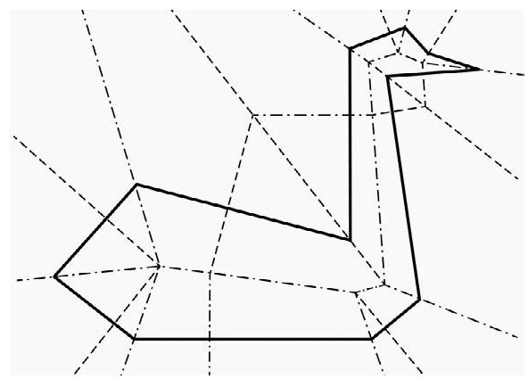
图1.1 天鹅折纸
孩子们喜欢折美丽的白天鹅，但这种折纸违反了传统：不剪、不撕、不用胶水。但如果允许剪一刀呢？能做出什么样的图形？麻省理工学院（MIT）有一位年轻的加拿大裔教授埃里克·德曼给出了惊人的答案，他的研究领域是艺术、数学和计算机科学。德曼证明，任何形状，只要边界是由有限直线段组成，就能通过适当的折叠然后一刀剪出！这其中包括任意的多边形或多重多边形。图1.1给出了制作天鹅的折叠图样，将纸沿图形的短划线和点划线折叠起来，沿着实线一刀就能剪出天鹅。
斐波那契数列和黄金分割
数学家和数学爱好者都对斐波那契数列感兴趣。斐波那契数列最前面的两个数字是1，随后的每个数字都是前面两个数字之和，根据这个规则生成的数列是1，1，2，3，5，8，13，21，……用Fn表示第n个斐波那契数，存在一个巧妙的通项公式：
随着n越来越大，第2项缩小到接近0，因此Fn可以近似为
这个缩略形式意味着前后项之间的比为
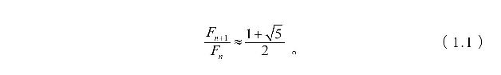
右边的常数——通常用希腊字母ϕ表示——称为黄金比例。这个数与艺术、建筑和生物生长之间的关系有很久的研究历史，但并不是很多人都知道ϕ与整数1之间存在关联，有两个美丽的公式体现了这种关联。第一个是
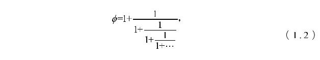
这个公式是一个无穷连分式。为了便于理解，考虑它的一个有穷形式：
注意在每一步化简中，最“底层”的分数——例如，第1个式子中的1/1，第2个式子中的1/2——就是相邻两个斐波那契数的比。随着不断加1和1除，近似公式（1.1）就产生出了公式（1.2）。
第二个将ϕ和数字1联系到一起的公式中包含嵌套开平方：
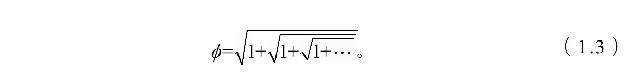
同样可以写出其有限形式
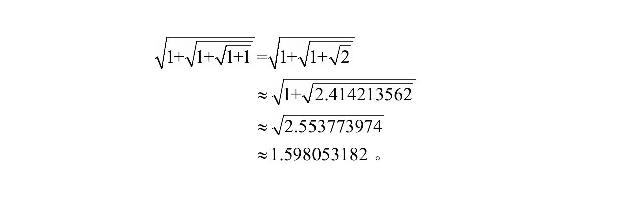
与连分式不同，不断加1和开平方产生的数没有那么漂亮的结构。不过要证明公式（1.3）并不困难。如果令
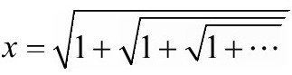
，则因此x2-x-1=0。解这个二次方程（注意x＞0）得到x=ϕ。
数的唯一表示
将一个数分解成更小数的乘积有多少种方法？回想一下素数是不能分解的，最小的几个素数是2，3，5，7，11和13。60可以用10种方式分解（因子递增排列）：
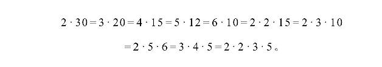
其中最后一种是唯一的只用了素数的分解方式，算术基本定理指出所有的数都只有一种素数分解方式。
大素数的分解十分困难，目前还没有有效的分解方法，最具挑战性的分解问题是半素数的分解，半素数是两个素数的乘积。半素数在密码学中具有重要作用。由于大素数具有十分重要的应用价值，因此关注互联网安全的电子前线基金会为寻找超大的素数提供了丰厚的奖金。
如果将乘换成加，算术基本定理就不再成立，即使很小的数都可以有多种分解成两个素数之和的方式，例如，16=5+11=3+13。如果我们将范围限定在自然数的某个子集，并坚持其中每个数最多只能用一次呢？2的幂集{1，2，4，8，……}就能做到这一点。例如，45可以写成45=32+8+4+1=25+23+22+20。这等于是将数写成二进制形式，因为45的二进制就是101101。每个数都有唯一的二进制表示。
另一个能给出唯一表示的自然数子集与斐波那契数列有关。齐肯多夫定理指出任意一个正整数都能被唯一地写成一个或多个不相等并且不相邻的斐波那契数之和。例如，45=34+8+3=F9+F6+F4。需要强调是不相邻的斐波那契数，否则，如果用F3+F2替换F4，就会产生45的另一种表示。虽然斐波那契数列已有大约800年的研究历史，齐肯多夫定理却是在1939年才被发现。
分解纽结
在上一节我们看到所有正整数都有唯一的素数分解方式，这种将对象分解成一个基本部分集合的思想也出现在一些让人意外的场合。
要理解纽结理论首先要理解纽结的结构，可以将纽结想象成两端连在一起的长绳。如何将3维的纽结画在平面上呢？想象一下将纽结摊在平面上，注意线的叠跨。最简单的情形是构成一个圆环，这并不是传统意义上的纽结，被称为解结。最简单的纽结是三叶形纽结（唯一具有3跨的纽结）和八字结（唯一具有4跨的纽结），如图1.2所示，八字结在帆船和攀岩中经常用到。
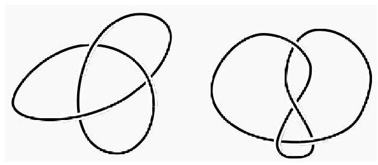
图1.2 三叶形纽结（左）和八字结（右）
然后是分解的思想。假设有两个复杂的纽结，各自剪断，然后将两者连接到一起（图1.3），我们称之为复合纽结。这个过程也可以反过来，一个纽结可以分解成两个纽结。对此我们不关心其中一个或两个新纽结都为解结的情形，这类似于将数字n写成n×1。如果一个纽结不能分解，我们称之为素纽结，这样基本问题就是是否所有纽结都能分解成一组素纽结，也就是说，算术基本定理是否能扩展到纽结？是！有定理证明了所有纽结都有唯一的素纽结分解。分解的序并不重要，无论怎样分解，最终的结果都是同样的一组素纽结。
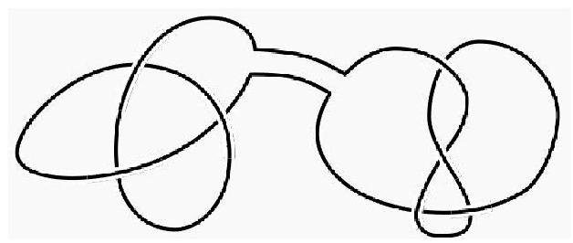
图1.3 将三叶纽结和八字结连到一起
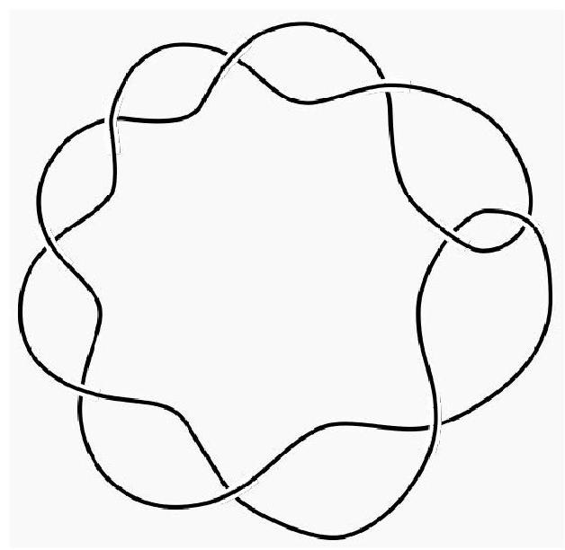
图1.4 只改变一个叠跨，能不能将这个变成解结？
除了叠跨的数量，还有另一种方式可以描述纽结的复杂性。假设我们可以剪开纽结将一个上跨变换成下跨（或反过来），对于给定的纽结，将其变成解结所需的变换次数称为解结数。让人惊讶的是有些纽结的叠跨很多，解结数却为1。你可以试一试图1.4中的纽结，只用一次变换，将这个有9次叠跨的纽结变成解结。这种情形很难一眼看出来。魔术师喜欢利用这种纽结，只用一次变换，然后让目瞪口呆的观众看着一团乱麻展开成一条简单的绳环。一般很难判断纽结的解结数，不过在1985年证明了，如果一个纽结的解结数为1，则其为素纽结。
计数和斯特恩序列
19世纪的数学家康托尔发展了不同层次的无穷大，震惊了数学界，他提出了一种比较两个集合的大小的新方法。
先说一个简单的问题：你怎么证明你的手指头同脚趾头一样多？大部分人都会说，“我有10个手指和10个脚趾，因此它们是一样多的”。这个论证没问题，但用到了一个不必要的概念，脚趾和手指的具体数量，问题要求的只是证明两个集合具有同样的大小，没有要求给出具体数量。那该怎么回答这个问题呢？将手指和脚趾一一对应就可以，即一个手指与一个脚趾配对。例如，左手的大拇指对左脚的大脚趾。通过配对，我们就能说手指的集合与脚趾的集合具有同样的大小——用数学术语说就是具有相同的基数。将一个集合中的每个元素与另一个集合中的一个元素进行配对，这种一一对应的思想在数学中经常被用来证明两个集合具有相同的基数。
一一对应的思想可以延伸到无穷集。正整数的集合与所有非零整数的集合具有相同的基数。感觉似乎不太可能，因为第一个集合完全属于第二个集合。难道不应该是第二个集合是第一个集合的两倍大吗？实际上在两个集合之间可以建立一一对应：
第一个集合中的每个数都可以与第二个集合中的一个数配对，因此两个集合具有相同的基数。推而广之，任何可以“列出”的无穷集合都与正整数集具有相同的基数。这种集合称为可列无穷集，简称可列集。
正整数集和正有理数集如何比较？康托尔认为两者具有相同的大小。这又是如何做到的呢？任何两个相邻整数之间都有无穷多个有理数，得出这样的结论似乎很荒谬，标准做法是将有理数排列成网格（图1.5），然后沿着对角线一一对应。排在前面的几个有理数是1、2、
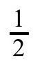
、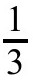
、3、4、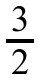
和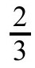
。从图中可以看到，我们略过了一些数。例如，在出现数字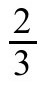
后，又出现了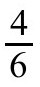
、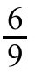
，等，根据先到先占的原则，我们将后出现的相同数字去掉，每个分数只在第一次出现时被计数。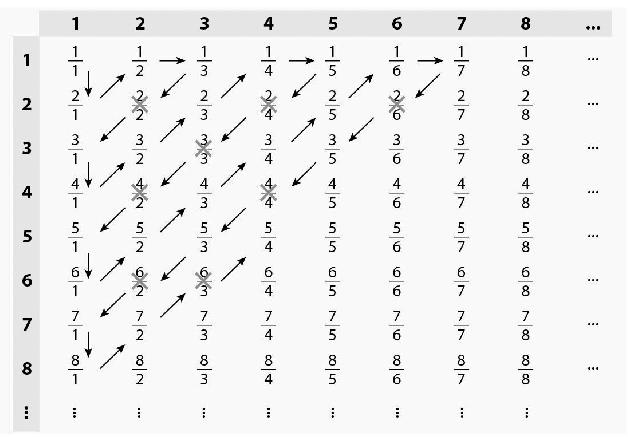
图1.5 对有理数进行计数
有没有一一对应可以不这样跳跃呢？有一种方法要用到斯特恩序列。斯特恩序列是这样定义的，f（0）=0，f（1）=1，以及两个递归关系f（2n）=f（n）和f（2n+1）=f（n）+f（n+1）。前面几项是0、1、1、2、1、3、2、3、1、4、3、5、2、5、3、4。可以证明这个数列中任何相邻的两个数都是互素的，也就是说，它们没有相同的因数。据此可以推出如下惊人的定理：在由f（n）/f（n+1）生成的有理数序列中，每个有理数正好出现一次，这样我们就得到了所希望的正有理数与正整数的一一对应，表1.1列出了一些项。
表1.1 斯特恩序列
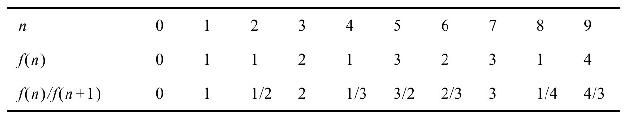
康托尔关于无穷的思想现在已经成为数学的标准，但刚提出时让数学界大为震惊。庞加莱称康托尔的研究为“绝症”（Dauben，Georg Cantor，1979，p.266），克罗内克指责康托尔是一个“堕落青年”（Dauben，Georg Cantor，1977，p.89）。希尔伯特则声称，“没有人能将我们从康托尔创建的天堂中赶出去”（Hilbert，Über das Unendliche，p.170）。
分形
三分康托尔集是数学分析中被研究得最多的怪异集合之一，构造方法是从区间[0，1]开始，去掉中间的
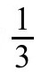
，即区间（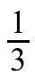
，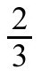
），然后再去掉剩下的[0，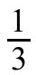
]和[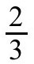
，1]这两个区间中间的三分之一，反复执行这个去除过程直到无穷（图1.6）。感觉这个过程似乎什么也没留下，将去掉的区间长度加起来，通过几何级数可以算出因此去掉部分的总长度等于原区间的总长度。不过，区间的度量与点集的度量不同，实际上留下的还有无穷多个点，也就是所谓的康托尔集。这个集合是如此精细，因此有时候也被称为康托尔尘。简要说一下，这个集合包含基为3并且每一位都不为1的无穷扩展的数。例如
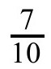
，其基为3的扩展是0.20022002200……。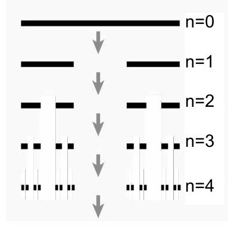
图1.6 生成康托尔集
康托尔集还有一个有趣的特性。将其复制一份，缩小为原来的
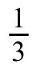
，再复制一份，也缩小为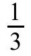
，并右移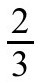
。两个缩小的集合的并集正好就是原来的康托尔集。如果一个集合是有限个自身的缩小拷贝的并集，我们就说它具有自相似性。我们能从另一个集合出发，复制两份，像刚才那样缩小和移位，又得到原来的集合吗？不能。根据哈钦森定理，变换集——即缩小和移位集合拷贝的规则——唯一地确定了在这种变换下具有自相似性的集合。生成康托尔集的过程可以被一般化，生成各种怪异的集合。如果是平面上的点集会更让人印象深刻。例如，将一个等边三角形分成4份，然后去掉中间的三角形。然后将留下的小三角形又分成4份，又去掉中间的。不断执行这个过程直到无穷，就可以生成谢尔宾斯基三角（图1.7）。
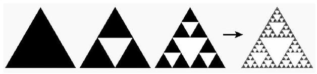
图1.7 生成谢尔宾斯基三角
很显然谢尔宾斯基三角也具有自相似性：将3个缩小的拷贝排列起来就可以得到原来的图。编写计算机程序画出这样的图不是很难，有一个更简单的办法是借助混沌游戏这类程序对平面上的点应用下面这3条规则：
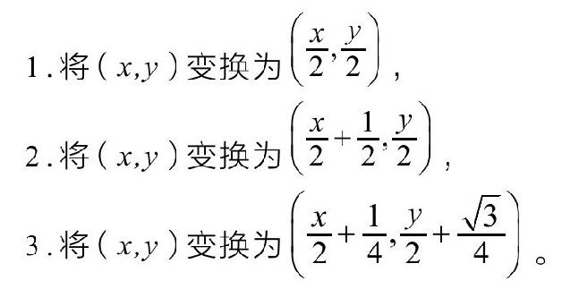
第一条规则将一个点移到距原点的一半处。第二条规则先执行与第一条相同的操作，然后右移
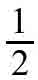
。第三条规则也执行与第一条相同的操作，然后右移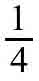
，上移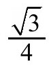
。这里每一条规则都是受集合的自相似性启发。混沌游戏程序是怎么做的呢？随机选择平面上的点并随机应用这3条规则其中的一条，再随机选择一条规则并将其应用到新生成的点。重复这个过程，比如说100次后，逐步将这些点画出来（图1.8）。谢尔宾斯基三角就慢慢呈现出来。
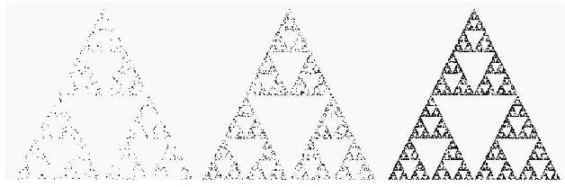
图1.8 混沌游戏程序生成的谢尔宾斯基三角
一般而言，如果有有限条变换规则，每一条都是缩小，可能还有移位和旋转。从任意点出发应用规则中的一条（每一步随机选取），反复执行，根据哈钦森定理可知，填充出来的将是唯一的集合，这种集合被称为吸引子。规则的结构会使得吸引子具有自相似性，这些自相似集就是分形。用这种方法可以生成许多复杂的集合，例如巴恩斯利蕨和门格海绵这样的三维结构（图1.9）。
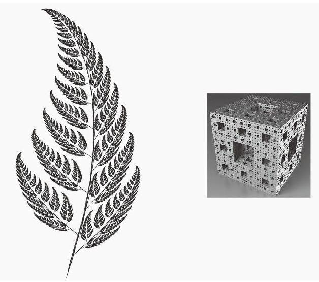
图1.9 巴恩斯利蕨（左）和门格海绵（右）
吉尔布雷斯猜想
探寻素数中的模式就好像寻找圣杯，在这些数中发现简单秩序的每一次尝试都让研究者们回到原点——吉尔布雷斯猜想正是这样。列出排在前面的一些素数，然后取相邻素数之差的绝对值，反复这样做，表1.2给出了前面几行。
表1.2 吉尔布雷斯猜想
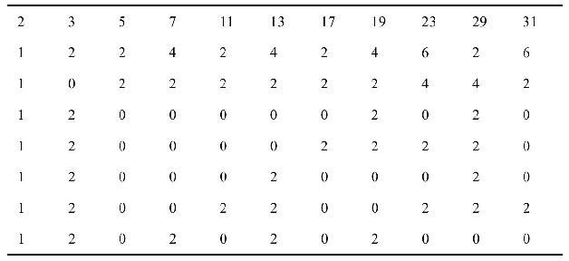
你有没有注意到某种模式？每一行都是从1开始，这不是因为我们只做了几行导致的巧合，一项计算机研究证实了，直到大约3.4×1011行，每一行的第一项都是1。吉尔布雷斯猜想认为第一项永远都是1。这个问题看似很简单，但直到目前还没有被证明。
本福特定律
随机取一个正整数，第一位为1的概率有多大？当然是
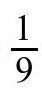
。1并没有什么特别：遇到其他数的可能也同样是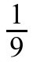
。然而如果改变一下场景，比如计算城镇的人口规模呢？第一位是1的可能性不再是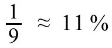
，而是30%左右。不仅仅城镇规模是这样，所得税、街道门牌号、斐波那契数列、河流的长度等，许多现象都存在同样的偏离。根据本福特定律，这些现象的第一位的值为n的概率是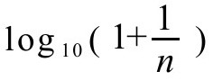
。图1.10给出了计算出的百分比。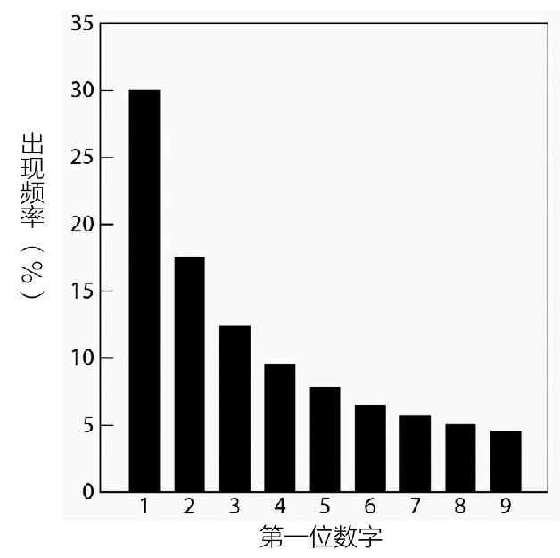
图1.10 根据本福特定律得出的第一位数字的概率分布
不难证明这些概率加起来为1：
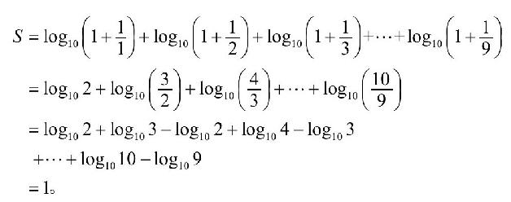
第一个观察到并记录这种现象的是美国天文学家西蒙·纽康，他于1881年注意到对数表的第一页比后面的页面要脏得多，对数表在计算中经常要用到。直到20世纪30年代，弗兰克·本福特才再次注意到这种现象，随后他分析了大量人工的和天然的数据集。一般来说，具有某种指数增长率的现象都服从本福特定律。
这种违反直觉的小数字倾向已被应用到法律中。偷税者为了让伪造的文件看起来可信，会修改文件中的数据，为了让数据看起来真实，他们会以随机的方式捏造数据，这会导致数据违背本福特定律，从而引发稽查。
布劳威尔不动点定理
假设你有两张相同的画纸，将一张放在桌上，另一张揉皱，放在前一张上，各边不越出去，则皱纸上至少有一点不动，也就是说，正处于平纸的对应点的上方。这是布劳威尔不动点定理的一个具体例子。不幸的是，这个定理不是构造性的，它没有告诉我们那个不动点在哪里！类似布劳威尔这样的不动点定理有很多应用背景，包括数理经济学。与前面见过的一些唯一性定理不同的是，不动点定理给出的是存在性论断，唯一性定理说的是最多存在一个，而存在性论断说的则是至少存在一个。
布劳威尔不动点定理的一个变体是毛球定理。假设球上每点都有一根朝外的短毛发，毛发的方向以连续的方式变化，毛发定理说的是至少有一根毛发必须垂直朝上。你可以通过梳一个椰子来想象。而另一方面，不存在什么毛面包圈定理，面包圈上的所有毛发都可以沿同一个方向放平，因此没有毛发立起来。
逆问题
“给定x，计算x2”，这样的问题可以直接通过乘法得出。给定数字13，其平方是169。反过来，“给定x，求y，使得x=y2”，如果x=169，则y=±13。这样的问题会引出一系列问题，就像例子中那样，答案可能不唯一。事实上，解有可能不存在：如果x是负数，就不存在y的平方等于x。而即便解存在，要算出具体的值（或近似解）也需要更多努力，计算平方根比乘法所需的计算量要大得多。将最初的求平方的问题称为正问题，求平方根的问题则是相应的逆问题。
逆问题通常很难分析和解决，答案的存在有限制条件，构造答案的过程所需的计算成本要比相应的正问题昂贵得多（所需计算机内存和时间更多）。当然，如果答案不存在，求解就毫无意义，而如果答案不唯一，求解可能更为困难。
来看一个更复杂的逆问题。假设可以测量照片上每一点的灰度，则可以用这个信息来计算沿某条与图片相交的直线的平均灰度。现在将这个问题逆过来，假设已知沿某条直线的平均灰度，能不能利用这个信息求出各点的灰度？1917年约翰·拉东对这个问题给出了肯定答案，拉东变换就是得出唯一灰度解的公式。
这个似乎纯粹理论性的结果具有广泛的应用。第一个实际应用出现在大约50年后，与医学成像有关，取一个人体截面（当然是想象的），我们关心的不是灰度，而是各点人体组织的密度。用已知强度的X线束穿过人体，并测量射线束的强度衰减，就能计算出沿途所穿过组织的平均密度。沿通过截面的所有直线测量平均密度，拉东变换就可以用这些测量值重构出各点组织的密度，对身体各层截面都执行这个过程，就能得到人体各点密度的图像。有了这些信息，医生就可以发现肿瘤。对这项技术的早期应用使得神经疾病的诊断有了突破性进展，基于这种方法诞生了非介入性医疗成像技术。阿兰·科马克和高弗雷·豪斯费尔德由于在这个领域的奠基性研究荣获了1979年的诺贝尔生理学或医学奖。
解这类逆问题的成果还有很多，这个理论成功的一个关键是问题具有唯一解。除了医学，逆问题在其他领域也有很多应用，地震成像也是一个大尺度上的逆问题。如果声波传入地下，并且知道岩层的密度变化，就能计算出反射回地面的声波的强度。逆问题是测量出反射波的强度，据此利用数学重构地下岩层的密度，而不用挖洞！这是找油的现代方法。另一个逆问题是检测裂缝，为了检查引擎结构是否有缺陷，需要对缸体、活塞头和曲轴进行检测。与地震成像的思想类似，非破坏性的静电测量能够揭示材料的结构。这类测量技术在希望能无损的应用场合中被证明很有用。但故事并没有结束，这些应用背后的理论要求精确测量，而在实际中这是不可能的，条件局限和噪声会导致图像模糊，产生条纹和重影等干扰，要发展出数值稳定技术来逼近准确的唯一解还需要做更多研究。
完美正方形
一个正方形如果能被分割成有限个大小不一的小正方形，就称为完美正方形。这些正方形的任何子集如果都无法组成一个矩形，则称之为简单完美正方形。
俄国数学家尼古拉·卢津认为完美正方形不可能构造出来，但这个论断被推翻了，1939年斯普拉格给出了一个由55个正方形组成的完美正方形。1978年，杜维丁给出了一记组合拳，他构造了一个由21个正方形组成的简单完美正方形（图1.11，正方形中的数字表示边的长度）。对于阶为21的简单完美正方形，这种分割是唯一的，而且不存在更低阶的简单完美正方形。
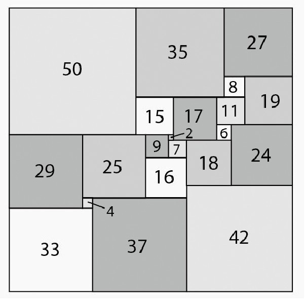
图1.11 将正方形分成21块的杜维丁分割
玻尔—莫勒鲁普定理
学数学的学生通常是在对排列进行计数时开始遇到阶乘，10个字母{a,b，c,d，e,f，g,h，i,j}有多少种排列方式？在第一个位置有10种可能，第二个位置有9种，第三个位置有8种，如此继续，因此排列的总数是10！=10×9×8×7×……×3×2×1=3628800。阶乘在数学中有许多用途，表1.3展示了阶乘的增长有多快。阶乘可以用递归的方式计算，（n+1）！=（n+1）×n！。为了与组合问题相联系，我们定义0！=1。
表1.3 阶乘函数值
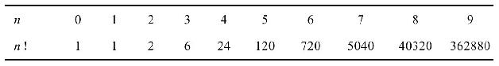
传奇性的18世纪瑞士数学家欧拉想到了如何将阶乘函数扩展到正实数。我们想将表1.3中的那些点“连”起来，从（0，1）到（1，1）、（2，2）、（3，6）、（4，24），等。当然，有无穷多种途径可以这样做，但我们想让得出的函数具有“漂亮的”性质，欧拉将伽马函数（图1.12）定义为
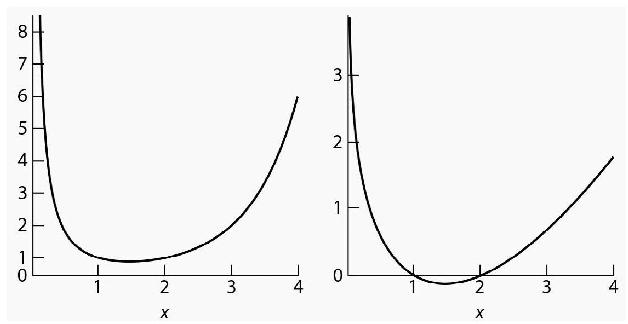
图1.12 函数Γ（x）和logΓ（x）
这个函数具有两个类似阶乘的性质：对于所有x＞0有Γ（1）=1和Γ（x+1）=xΓ（x），将这两个性质结合在一起可以证明，对于所有正整数n，有：
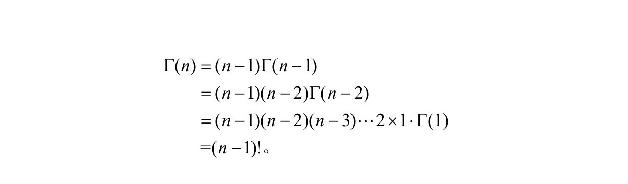
虽然这两个性质限制了对阶乘函数的可能扩展，但还是有其他可能。玻尔和莫勒鲁普发现了伽马函数的另一个性质：Γ（x）的图形具有对数凸性，也就是说，函数logΓ（x）具有凸性。说一个函数f（x）具有凸性，意味着如果a＜b，则连接（a,f（a））和（b,f（b））的线段位于y=f（x）的图形之上。那么伽马函数在阶乘函数的所有扩展中具有什么独特之处呢？玻尔—莫勒鲁普定理指出，伽马函数是唯一在正实轴上具有对数凸性的函数f（x），并对所有的x＞0，有f（1）=1和f（x+1）=xf（x）。
伽马函数在数论和分析中用途广泛，除了正弦和余弦这类经常出现的三角函数，伽马函数可能是最常用的特殊函数。甚至在统计中，
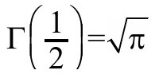
还不太为人所知地用在了正态分布的公式中。皮卡定理
学生一旦开始学习函数，就会学习定义域（可能的输入值的集合）和值域（对应的输出值的集合）的概念。如果一个实值函数的定义域是整个实数轴，则值域可能很大也可能很小。例如一个简单的例子f（x）=5，它的值域是{5}，只有一个元素，而f（x）=x的值域则是整条实数轴。在两者之间的呢？f（x）=1/（1+x2）的值域是（0，1]（包括1但不包括0），而sinx和cosx的值域都是[-1，1]，f（x）=ex的值域则为（0，∞）。
如果将函数扩展到复变量，情况会更为复杂，由于定义域变大了，值域通常也会变大。非常数多项式的值域包含所有复数，这是代数基本定理的一个简单推论。三角函数sinz和cosz的输入如果是实数，则值域有限，但如果是复数则值域包含所有复数。一些在实数轴上有完整定义的函数则不能扩展到整个复平面，例如
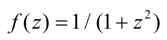
在iz=±就没有定义。皮卡小定理给出了一个宽泛的论断：如果非常数函数的定义域是整个复平面，并且在每一点都可微，则函数的值域也是整个复平面，可能除去一个点。例如，函数
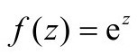
满足定理的条件，其值域包括除0以外的所有复数。为什么叫皮卡“小”定理？哪里小？它本身一点也不小，它只是不像类似的皮卡大定理那样更加彻底，要阐明这个定理还需要引入其他术语。与实变函数类似，复变函数可能在一些点没有定义，这种点称为函数的奇点。有时候奇点就是函数图形上一个小小的洞，例如函数f（z）=sinz/z，这个函数在z=0没有定义，但随着z逼近0，函数值逼近1，我们称之为可去奇点。另一类奇点被称为极点，数学家们通常想到的都是这类，例如z=0就是函数的极点。这是一阶极点，如果函数在z=z0处有定义或者为可去奇点，并且m是满足这个条件的最小正整数，则称函数f（z）在z=z0处有m阶极点。还有些奇点的特性很强，不是任何阶的极点，它们被称为本性奇点。例如函数在z=0处。
那么皮卡大定理说的是什么呢？假设函数f在z=z0处具有本性奇点。想象一个中心位于z0的穿孔圆盘，即圆心被去掉了。这个定理断言，如果我们将定义域限定在这个穿孔圆盘上，则函数f的值域是整个复数域，至多排除一个点。无论圆盘有多小，值域都包含至多排除一个点的所有可能值。函数的本性奇点z=0在其值域中只排除了0，但会命中其他所有值无穷多次。